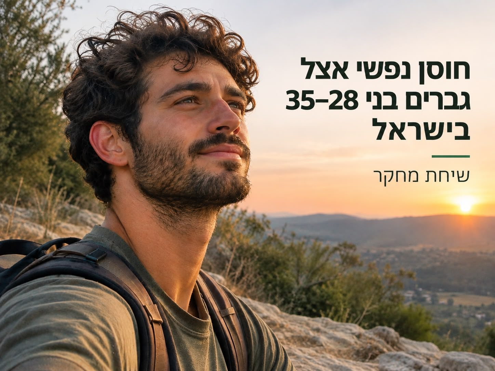

את מי אני מראיין
אני מראיין גברים בני 28 עד 35 החיים בישראל, כולל מי ששירתו במילואים בשנים האחרונות. אם יצאת למילואים, אשמח לשמוע גם איך זה השפיע עליך ועל הבית: לפני, במהלך ואחרי. השיחה מתאימה לכל גבר בגיל הזה, גם מי שמרגיש שהוא מסתדר טוב היום. לא צריך להיות במשבר.
השיחה רלוונטית בייחוד למי שניסה אחת מהאפשרויות הקיימות והפסיק, ולמי שלא פנה אליהן מעולם. שניהם מעניינים אותי.
עם מי כבר דיברתי, ומה שמעתי
עד היום שוחחתי עם 19 גברים. הנה מה ששמעתי שוב ושוב, בלי שמות ובלי פרטים מזהים.
רובם גברים מתפקדים ומוערכים, שבפנים מרגישים שהם לא במיטבם. חלקם כבר ניסו טיפול, קורסים או ריטריטים. מה שחסר להם הוא לא עוד תובנות, אלא כלים פרקטיים פשוטים ומסגרת תומכת.
רבים סיפרו שהם מתחילים לפעול רק כשמגיע משבר, ושהיו רוצים להתחיל מוקדם יותר. שירות המילואים וההשפעה שלו עלו ברוב השיחות.
מה קורה בשיחה
השיחה נמשכת 30 עד 45 דקות, בווידאו. אני שואל על הניסיון האישי שלך: מה אתה עושה כדי להתמודד עם קושי, אילו אפשרויות תמיכה ניסית או שקלת, מה עצר אותך, ומה היה עוזר לך.
זו שיחה של הקשבה ולמידה, ולא שיחת מכירה או שיווק, ואין בה שום מחויבות מצדך. אין תשובות נכונות או לא נכונות. מה שאלמד ישמש אותי כדי לפתח תמיכה שמתאימה באמת לגברים.
מי אני
אני גדי ספרוקט. את התיכון עשיתי בלונדון, ואחר כך שירתי בצה״ל כמפקד טנק מצטיין בחטיבה 188. למדתי פילוסופיה באוניברסיטת תל אביב, ובהמשך תואר שני ב־Central Saint Martins בלונדון.
בישראל ובלונדון אצרתי והפקתי אירועי אמנות רבי משתתפים, ופרויקט שהובלתי זכה בפרס של פסטיבל האדריכלות של לונדון. במקביל, ב־2005, הקמתי עם שותפים את Mumbojumbo, חברת לוקליזציית מדיה לשידור.
לאורך כל השנים האלה הלכתי גם בדרך פנימית: יותר מ־25 שנות מדיטציה וחקירה עצמית. בשנים 2013–2017 חייתי כתלמיד בבית ספר ליוגה, לפסיכולוגיה ולפילוסופיה בקוסטה ריקה, ובסך הכול חייתי שם 12 שנים. ואחר כך עברתי להנחות: מאז 2017 אני מנחה בכיר ומוביל תוכניות ב־Choose Again ובמרכז הריטריטים El Cielo בקוסטה ריקה, שם הייתי חבר בהנהגת המרכז, ועד מרץ 2026 גם ניהלתי אותו. הנחיתי יותר מ־500 אנשים בפגישות אישיות, במעגלים ובריטריטים.
היום אני מנחה ומאמן קבוצות ויחידים אונליין. ועכשיו אני מבקש לבנות מסגרת תמיכה חדשה לגברים, ומתחיל בהקשבה.
מה תקבל מהשיחה
בשבילך: הזדמנות לעצור ולחשוב קצת יותר לעומק על הצרכים שלך היום, בשיחה פתוחה וסקרנית, עם מי שמקשיב ולא שופט.
בשביל אחרים כמוך: מה שתספר משפיע על מה שייבנה בהמשך. אם נדמה לך שאין היום תמיכה שמתאימה לך ולגברים כמוך, זו הזדמנות להשפיע על כך.
אני לא מציע תשלום על השיחה. מה שאני כן מציע זה הקשבה אמיתית.
רקע: למה זה חשוב, ולמי זה יועיל
בישראל יש היום מגוון רחב של דרכי תמיכה בחוסן הנפשי, במיוחד מאז מלחמת חרבות ברזל: טיפולים פסיכולוגיים, מרכזי חוסן, וגם קבוצות ריצה ומעגלי גברים. ובכל זאת, ממצאים רבים (בין השאר דו״ח מבקר המדינה, קופות החולים, מחקר שערך המגזין כלכליסט ומ־Polly Labs) מראים שהצורך גדול, ורבים עדיין לא פונים לעזרה.
הגיל 28 עד 35 הוא צומת משמעותי בחיים: בונים קריירה, מקימים משפחה ונושאים הרבה אחריות בבת אחת. בשנים האחרונות מצטרף לכל זה גם שירות המילואים: ימים ארוכים הרחק מהבית ומהעבודה, וחזרה אל חיים שהמשיכו בלעדיך. גברים בגיל הזה נמצאים תחת לחץ, בעבודה, בבית ולעיתים גם כלכלי, ולכן קשה להם להגיע לתמיכה שמתאימה להם. דווקא בצומת הזה תמיכה נכונה יכולה לעשות הבדל גדול: לא רק הקלה ברגע הקשה, אלא גם כלים שילוו אותם לאורך החיים.
פרטיות
אני מקליט ומתמלל את השיחה לצורך המחקר בלבד, ורק בהסכמתך. בניתוח ובכל שימוש בממצאים לא יופיעו שמות או פרטים מזהים, ואפשר לבקש ממני למחוק את ההקלטה.

הזמנה לשיחה עם גדי ספרוקט
אם זה מעניין אותך, אפשר לקבוע איתי שיחה בזמן שנוח לך.
לקביעת שיחהיש שאלה לפני כן? אפשר לכתוב לי בוואטסאפ: 050-456-1884